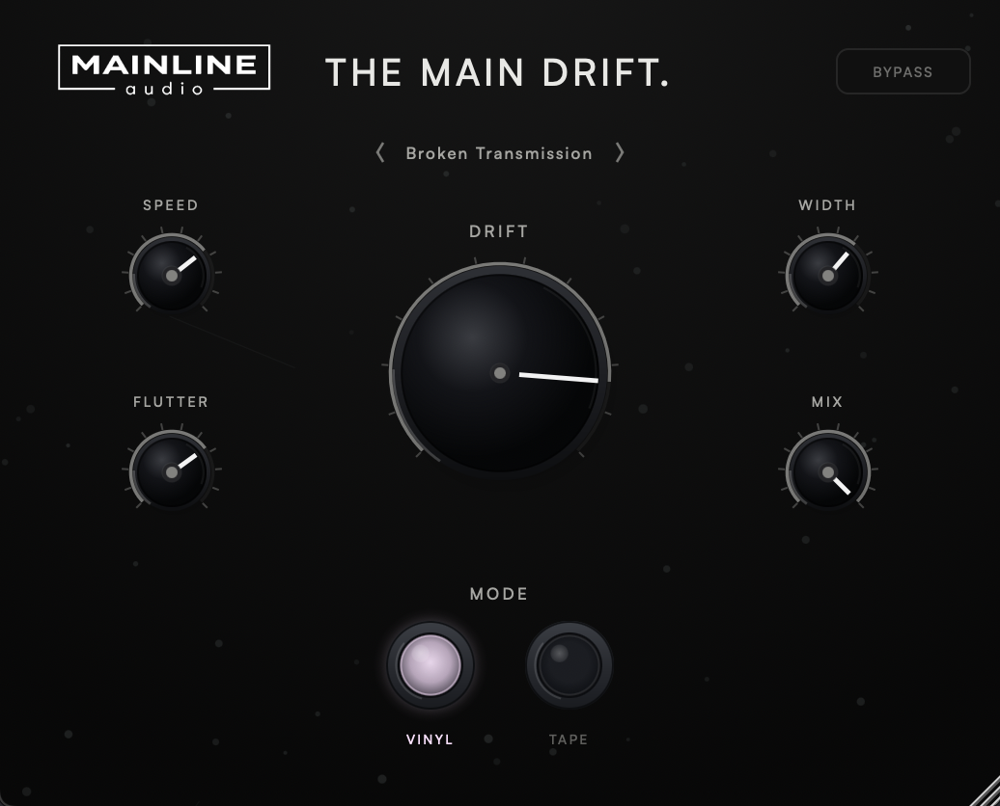

Mainline Audio
Creative Drift Processor
Slow, continuous movement in pitch and timing, from a barely-there wobble to obvious warping. Choose Tape or Vinyl motion, set how far and how fast it drifts, add Flutter, spread it across the stereo field, and blend it back in with Mix.
Available Now
Free

Two kinds of motion. Vinyl is a steady, repeating wobble with an uneven rise and fall. Tape is mostly slow, irregular wander, with more flutter and less repetition.
Drift sets how far pitch and timing move, weighted toward fine adjustment at low settings. Speed sets the main cycle from 0.05 to 3 Hz, and Flutter adds a faster, irregular wobble on top.
Lets the left and right channels drift differently, from moving together at 0% to each following its own pattern at 100%.
Blends delayed dry with drift. In between, the delayed dry and drifting paths move in and out of phase, creating chorus- and flanging-like movement on purpose. 0% is delayed dry; 100% is pure drift.
Both modes move pitch and timing together, the way a transport that isn’t quite steady does. They differ in how predictable that movement is.
Flutter’s rate follows Speed and its depth follows Drift, so at 0% Drift nothing moves at all.
Drifting audio has to be delayed so it can move both earlier and later. The Main Drift uses one fixed delay, about 42 ms, and reports it to your DAW so plug-in delay compensation keeps the track in time with everything else. The delay never changes with any setting.
The drift engine comes from The Focal Point, where Drift is a free-running tape- and vinyl-style pitch and timing wobble alongside its eight-stage spectral filter. The Main Drift gives that engine a plug-in of its own, and adds the fixed reported delay, aligned dry path, Mix and aligned bypass around it.
Click the preset name for the list or step through it with the arrows. Recalling a preset never changes Bypass.
Every factory preset uses Mix 100%.
| Mode | Vinyl / Tape (default Vinyl) |
| Drift | 0% – 100% (default 30%) |
| Speed | 0.05 Hz – 3 Hz (default 0.55 Hz) |
| Flutter | 0% – 100% (default 15%) |
| Width | 0% – 100% (default 15%) |
| Mix | 0% – 100% (default 100%) |
| Bypass | Delay-aligned, crossfaded, host bypass |
| Presets | 5 factory presets |
| Latency | Fixed, about 42 ms, reported to the host |
| Channels | Mono and stereo |
| Formats | AU / VST3 |
| Platform | macOS 11 or later · Apple Silicon & Intel (Universal) |
| Version | 1.0.0 |
VST3 & AU · macOS · Apple Silicon & Intel
Join the List
A creative drift processor. It moves pitch and timing slowly and continuously in Tape or Vinyl style, with Drift, Speed, Flutter, Width and Mix controls and five factory presets.
Not quite. It blends the delayed dry signal with the drifting signal. Between 0% and 100%, the two paths move in and out of phase, creating chorus- and flanging-like movement on purpose. 0% is delayed dry; 100% is pure drift.
Drift needs room to move audio both earlier and later, so the signal is held back by a fixed amount, about 42 ms. The Main Drift reports that delay to your DAW, which compensates for it, and the delay stays the same whatever the settings, including Bypass.
No. Width makes the left and right channels drift differently, so a mono track has nothing for it to act on. Wide settings can also sound phasey when a stereo track is summed to mono.
The drift engine comes from The Focal Point’s Drift section. The Main Drift gives it a plug-in of its own, with a fixed reported delay, an aligned dry path, Mix and aligned bypass. Its presets are its own and aren’t compatible with Focal Point preset files.
VST3 and AU on macOS 11 or later (Apple Silicon & Intel, Universal). AAX / Windows are not currently supported.
No. There’s no license key, activation or trial. Get it through the checkout above and you’ll receive download access by email.
The Main Drift checks once, shortly after you open it, for a newer stable version. If one is available, an UPDATE AVAILABLE badge appears; clicking it opens this page. The checker only reads the public version manifest—it never downloads or installs software and does not transmit project or usage data. If the check cannot be completed, nothing appears.